概要
01 Five inputs: the current error budget
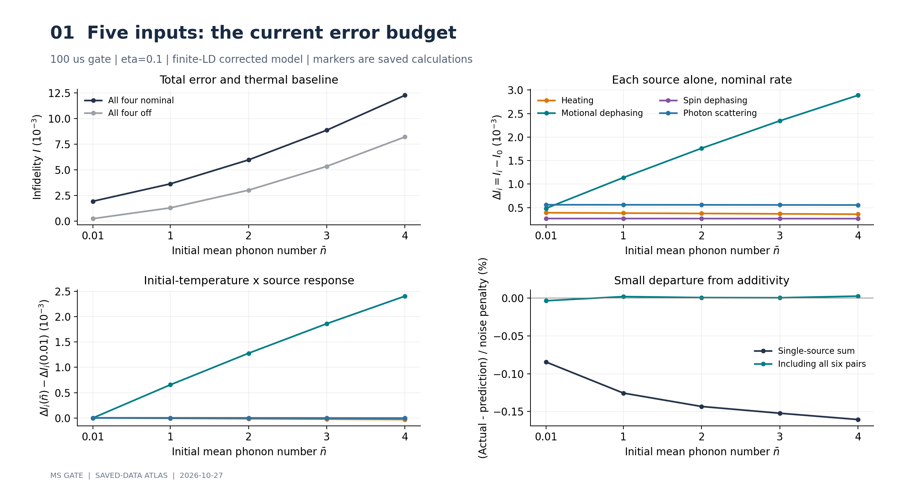
初期平均フォノン数は初期状態のパラメータで、他の4項は散逸レート。右上は他の散逸をゼロにした単独増分。左下はその増分から nbar=0.01 の値を引いた温度との混合応答。右下の分母は全ノイズによる増分 I_all-I_0。主要な温度依存は無散逸の基準誤差と運動位相緩和に現れる。線は保存点を結ぶ表示であり、追加計算や補間精度の保証ではない。
出典
results/noise_rate_nbar_sweep/all_noise_zero_vs_nominal.csv
results/noise_rate_nbar_sweep/four_noise_reconstruction/four_noise_single_components.csv
results/noise_rate_nbar_sweep/four_noise_reconstruction/four_noise_reconstruction.csv
単独ノイズと温度
02 Isolated source response versus rate
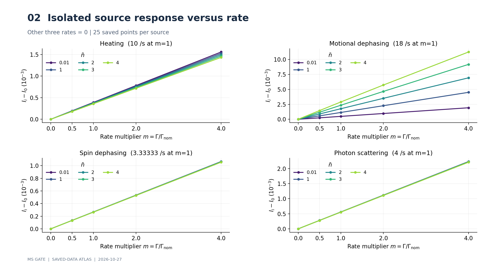
全ペア格子に共通の単独軸から重複なく抽出した100点。運動位相緩和だけが強い温度依存を持つ。レートの物理単位は各パネルの基準値で換算する。
出典
results/noise_rate_nbar_sweep/all_pairwise_5x5_grids/all_pairwise_grid_qpt_summary.csv
results/noise_rate_nbar_sweep/all_noise_zero_vs_nominal.csv
単独ノイズと温度
03 Rate sweeps with the other noises present
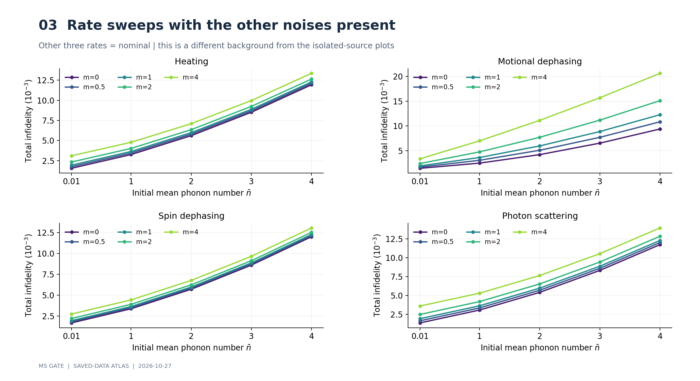
既存ノートブックの100点。各パネルで指定レートだけを変え、他の3レートは基準値に固定。m=0 でも他の散逸と有限LD補正が残るので、単独寄与や無散逸とは異なる。
出典
results/noise_rate_nbar_sweep/summary.csv
全6ペア
04 All six pairs: signed nonadditivity
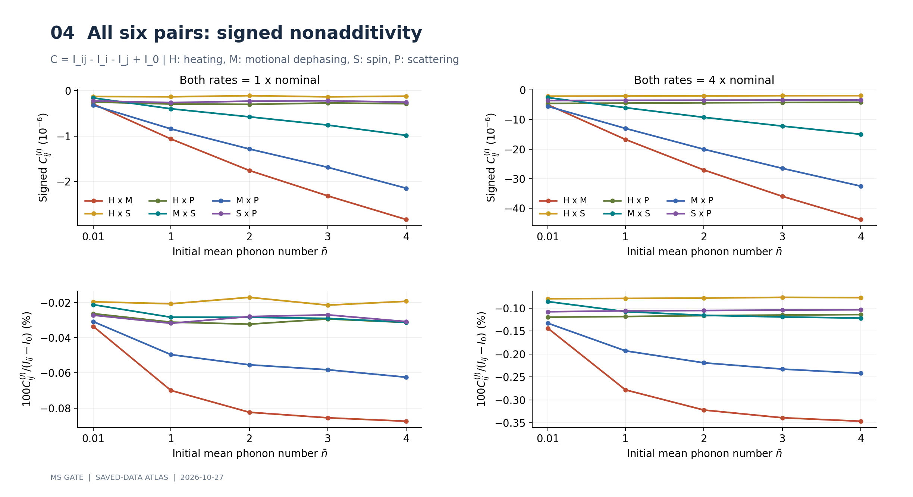
他の2散逸をゼロにしたペア比較。負のCは単独増分の和より小さいことを表す。統計的に相関した環境浴の証拠やPearson相関係数ではない。下段はペアによる誤差増分で割った値。微小な混合差分の確定桁数には直接の収束確認が必要。
出典
results/noise_rate_nbar_sweep/all_pairwise_5x5_grids/all_pairwise_grid_interactions.csv
全6ペア
05 Pair grid: Heating x Motional dephasing
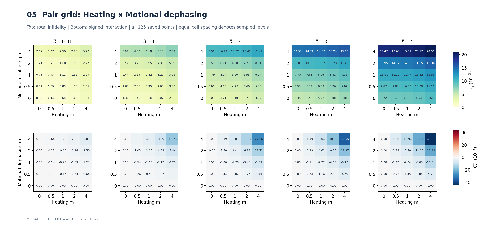
運動加熱×運動位相緩和の全125点。上段は総infidelity、下段は混合差分C。温度間の比較ができるよう、各段で同じ色範囲を使用。レート倍率0、0.5、1、2、4は不等間隔の数値だが、表形式としてセルを等間隔に表示。値は表示桁で丸め、元の精度はCSVに保持。
出典
results/noise_rate_nbar_sweep/all_pairwise_5x5_grids/all_pairwise_grid_interactions.csv
全6ペア
06 Pair grid: Heating x Spin dephasing
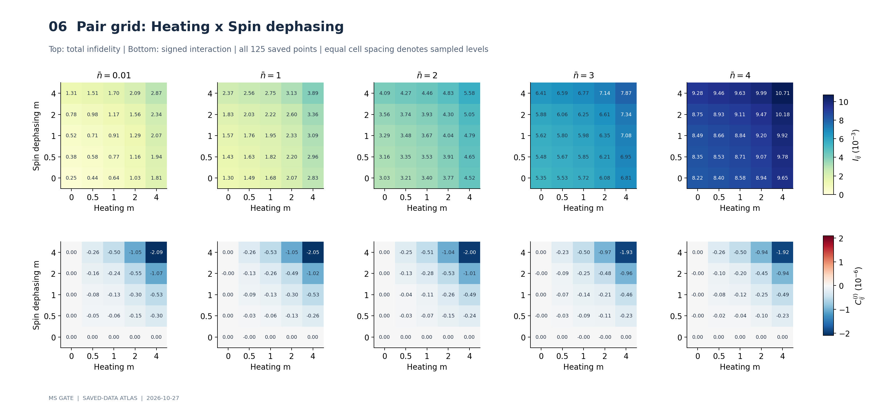
運動加熱×スピン位相緩和の全125点。上段は総infidelity、下段は混合差分C。温度間の比較ができるよう、各段で同じ色範囲を使用。レート倍率0、0.5、1、2、4は不等間隔の数値だが、表形式としてセルを等間隔に表示。値は表示桁で丸め、元の精度はCSVに保持。
出典
results/noise_rate_nbar_sweep/all_pairwise_5x5_grids/all_pairwise_grid_interactions.csv
全6ペア
07 Pair grid: Heating x Photon scattering
運動加熱×光散乱の全125点。上段は総infidelity、下段は混合差分C。温度間の比較ができるよう、各段で同じ色範囲を使用。レート倍率0、0.5、1、2、4は不等間隔の数値だが、表形式としてセルを等間隔に表示。値は表示桁で丸め、元の精度はCSVに保持。
出典
results/noise_rate_nbar_sweep/all_pairwise_5x5_grids/all_pairwise_grid_interactions.csv
全6ペア
08 Pair grid: Motional dephasing x Spin dephasing
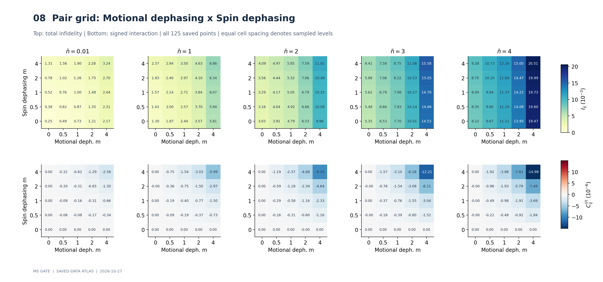
運動位相緩和×スピン位相緩和の全125点。上段は総infidelity、下段は混合差分C。温度間の比較ができるよう、各段で同じ色範囲を使用。レート倍率0、0.5、1、2、4は不等間隔の数値だが、表形式としてセルを等間隔に表示。値は表示桁で丸め、元の精度はCSVに保持。
出典
results/noise_rate_nbar_sweep/all_pairwise_5x5_grids/all_pairwise_grid_interactions.csv
全6ペア
09 Pair grid: Motional dephasing x Photon scattering
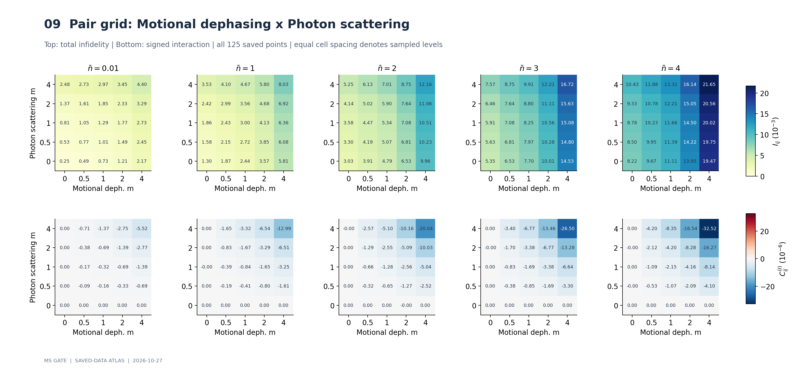
運動位相緩和×光散乱の全125点。上段は総infidelity、下段は混合差分C。温度間の比較ができるよう、各段で同じ色範囲を使用。レート倍率0、0.5、1、2、4は不等間隔の数値だが、表形式としてセルを等間隔に表示。値は表示桁で丸め、元の精度はCSVに保持。
出典
results/noise_rate_nbar_sweep/all_pairwise_5x5_grids/all_pairwise_grid_interactions.csv
全6ペア
10 Pair grid: Spin dephasing x Photon scattering
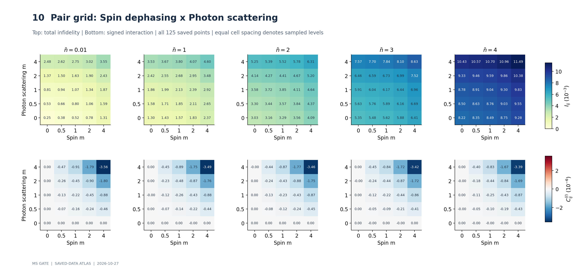
スピン位相緩和×光散乱の全125点。上段は総infidelity、下段は混合差分C。温度間の比較ができるよう、各段で同じ色範囲を使用。レート倍率0、0.5、1、2、4は不等間隔の数値だが、表形式としてセルを等間隔に表示。値は表示桁で丸め、元の精度はCSVに保持。
出典
results/noise_rate_nbar_sweep/all_pairwise_5x5_grids/all_pairwise_grid_interactions.csv
4ノイズ同時作用
11 Reconstructing the four-noise calculation
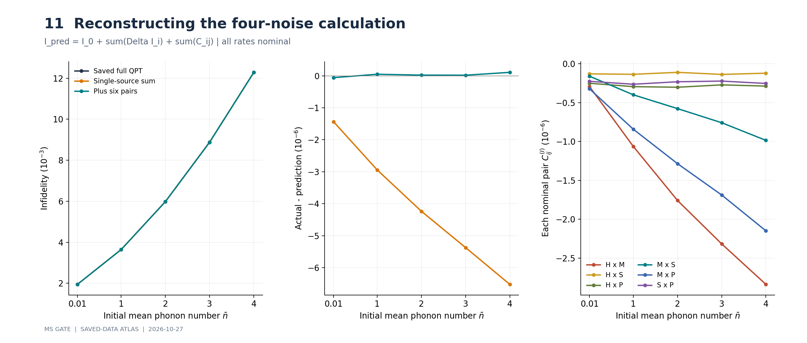
単独寄与の和と6ペア補正から、4散逸を同時に入れた計算を再構成。中央は大きく拡大した差であり、ペア補正後の約1e-7の一致を数値精度の証明とは扱わない。
出典
results/noise_rate_nbar_sweep/four_noise_reconstruction/four_noise_reconstruction.csv
results/noise_rate_nbar_sweep/four_noise_reconstruction/four_noise_pair_components.csv
4ノイズ同時作用
12 Four-rate validation away from the nominal point
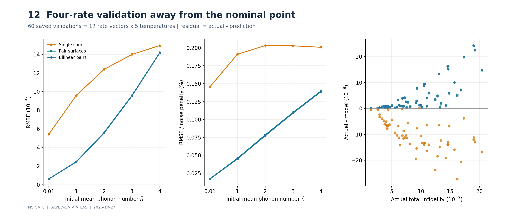
4レート同時変更の60検証点。単独加算、ペア曲面、ペア双線形モデルを比較。基準点の再構成と異なり、任意レート側ではペア補正後にも残差がある。ここでの相対RMSEはノイズ増分を基準とする。
出典
results/noise_rate_nbar_sweep/four_noise_rate_validation/model_predictions.csv
results/noise_rate_nbar_sweep/four_noise_rate_validation/model_comparison_metrics.csv
4ノイズ同時作用
13 High-temperature extension and extrapolation limits
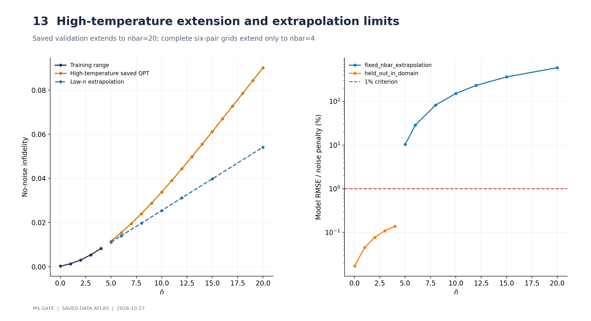
高温域にも無散逸16点と4ノイズ同時作用84点がある。低温データからの外挿は、保存された1%判定でnbar=4が最後の合格点、5が最初の不合格点。これはそのモデル・離散検証条件の適用限界であり、物理的な相転移や普遍的な臨界温度ではない。
出典
results/noise_rate_nbar_sweep/four_noise_nbar_critical_search/high_nbar_model_predictions.csv
results/noise_rate_nbar_sweep/four_noise_nbar_critical_search/nbar_critical_curve.csv
results/noise_rate_nbar_sweep/four_noise_nbar_critical_search/all_noise_zero/validation_qpt_summary.csv
誤差生成子の相関
14 Initial phonon number: three resolved error components
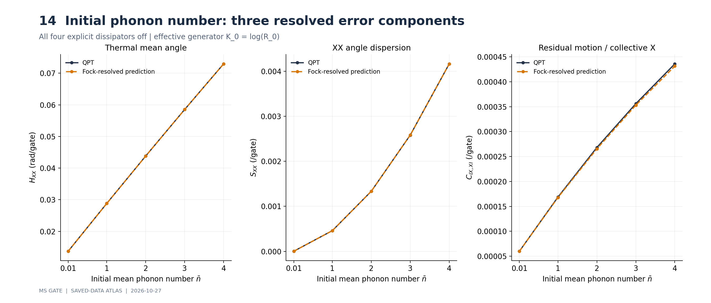
初期熱分布だけの効果を、平均XX角のずれ、XX角のばらつき、残留運動による集団X成分に分ける。Fock分解予測とQPTの直接比較。無散逸でも有限LD補正により誤差が残る。この図のS_XXと集団XのC_IX,XIは別成分。
出典
results/noise_error_structure/noise_free_fock_generator_comparison.csv
誤差生成子の相関
15 Generator structure for all five inputs
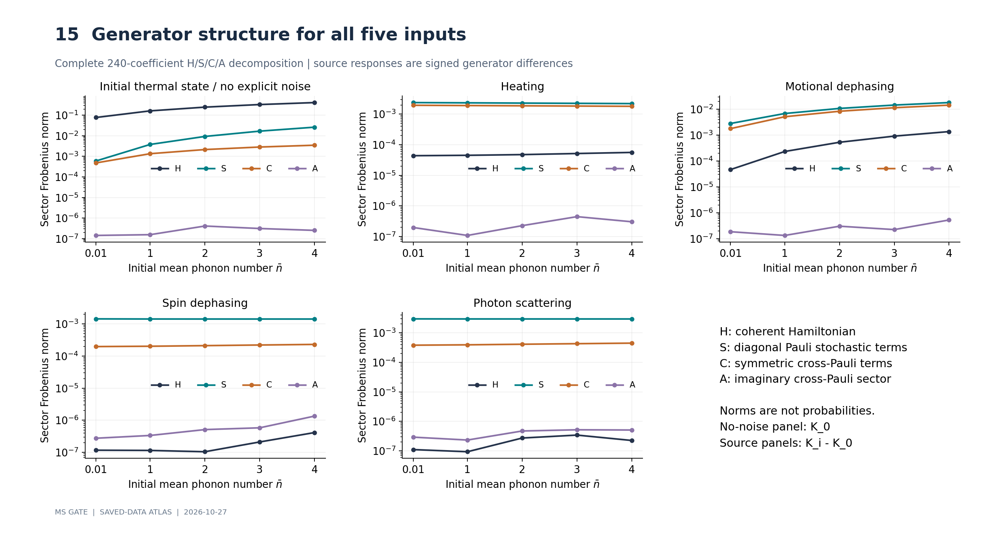
各散逸の基準レートでの応答をΔK_i=K_i-K_0として分解。初期熱状態のパネルのみK_0そのもの。縦軸は各セクターが作る行列のFrobeniusノルムで、確率や加算的誤差予算ではない。H/S/C/Aの係数全6000行を元CSVから参照できる。
出典
results/noise_error_structure/full_taxonomy_coefficients.csv
results/noise_error_structure/full_taxonomy_overall_summary.csv
誤差生成子の相関
16 Correlation modes: Initial thermal state / no explicit noise
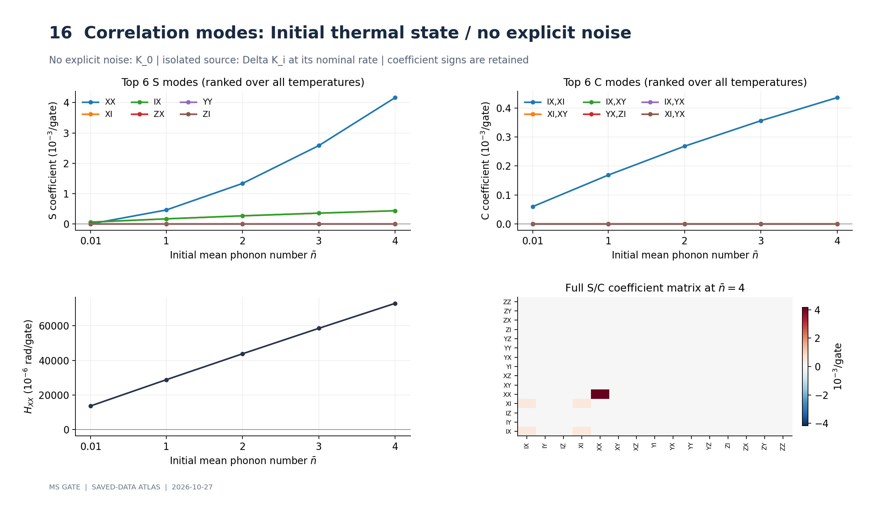
初期平均フォノン数（明示的な散逸なし）の主要成分。上段は温度全域の最大絶対値で選んだS/C各6モード、左下はH_XX、右下はnbar=4における15×15全S/C行列。右下の色範囲はこの入力内で設定しているため、他ページとの強度比較にはカラーバーを使う。ΔKの負係数は符号付き差分であり、単独の物理的崩壊率とは限らない。
出典
results/noise_error_structure/full_taxonomy_coefficients.csv
誤差生成子の相関
17 Correlation modes: Heating
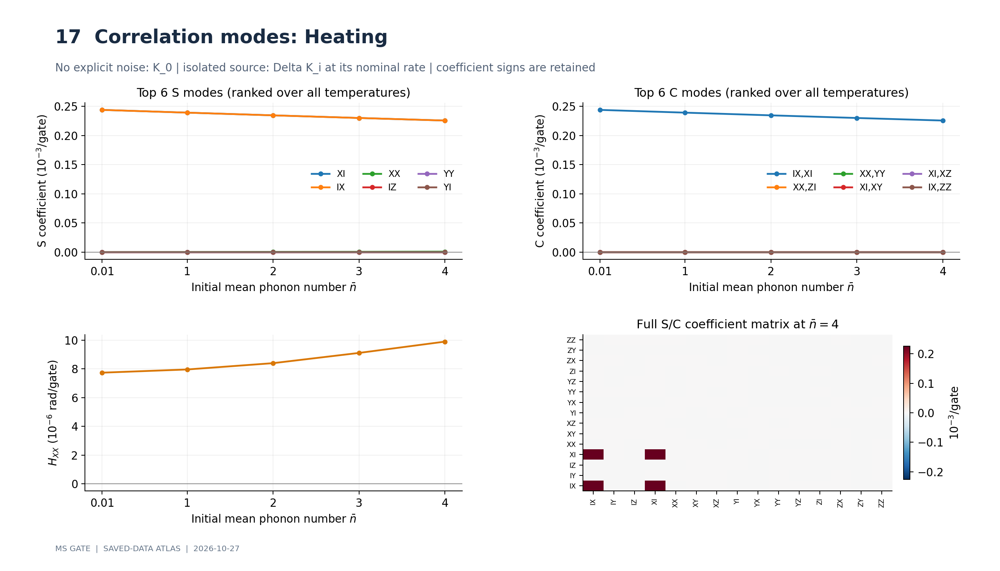
運動加熱の主要成分。上段は温度全域の最大絶対値で選んだS/C各6モード、左下はH_XX、右下はnbar=4における15×15全S/C行列。右下の色範囲はこの入力内で設定しているため、他ページとの強度比較にはカラーバーを使う。ΔKの負係数は符号付き差分であり、単独の物理的崩壊率とは限らない。
出典
results/noise_error_structure/full_taxonomy_coefficients.csv
誤差生成子の相関
18 Correlation modes: Motional dephasing
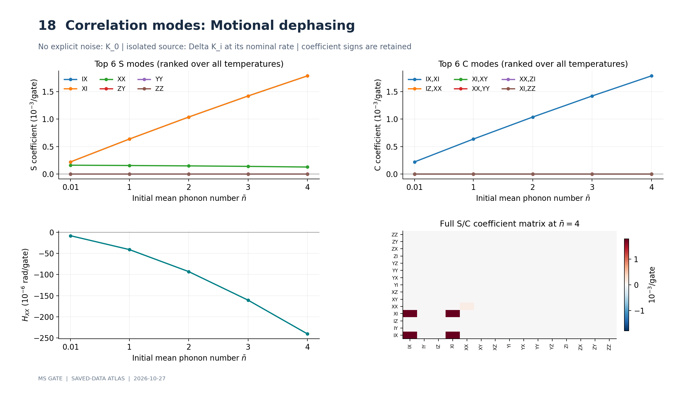
運動位相緩和の主要成分。上段は温度全域の最大絶対値で選んだS/C各6モード、左下はH_XX、右下はnbar=4における15×15全S/C行列。右下の色範囲はこの入力内で設定しているため、他ページとの強度比較にはカラーバーを使う。ΔKの負係数は符号付き差分であり、単独の物理的崩壊率とは限らない。
出典
results/noise_error_structure/full_taxonomy_coefficients.csv
誤差生成子の相関
19 Correlation modes: Spin dephasing
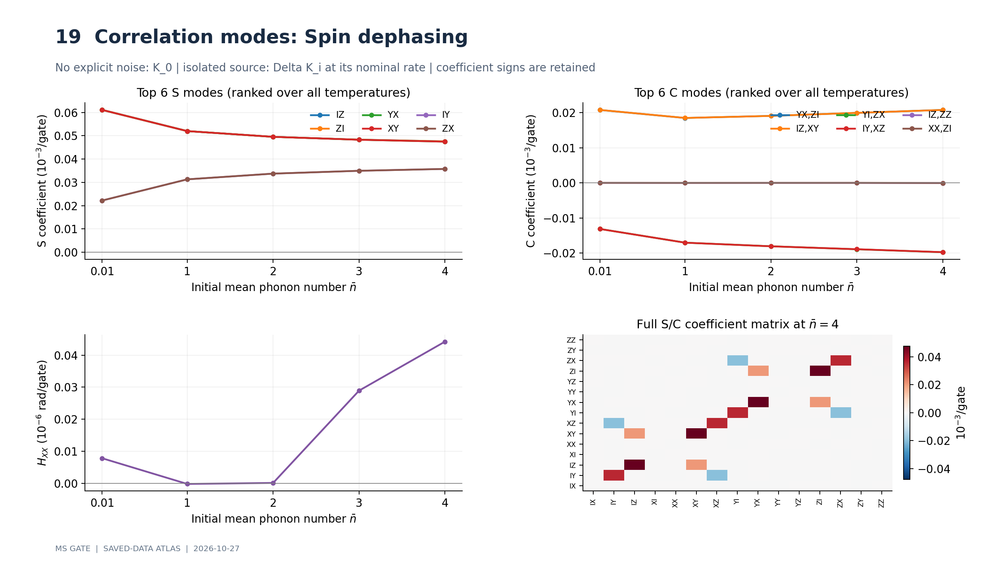
スピン位相緩和の主要成分。上段は温度全域の最大絶対値で選んだS/C各6モード、左下はH_XX、右下はnbar=4における15×15全S/C行列。右下の色範囲はこの入力内で設定しているため、他ページとの強度比較にはカラーバーを使う。ΔKの負係数は符号付き差分であり、単独の物理的崩壊率とは限らない。 スピン位相緩和・光散乱のH_XXは約1e-8 rad/gateの微小量で、この図だけで非ゼロの物理応答を確定しない。
出典
results/noise_error_structure/full_taxonomy_coefficients.csv
誤差生成子の相関
20 Correlation modes: Photon scattering
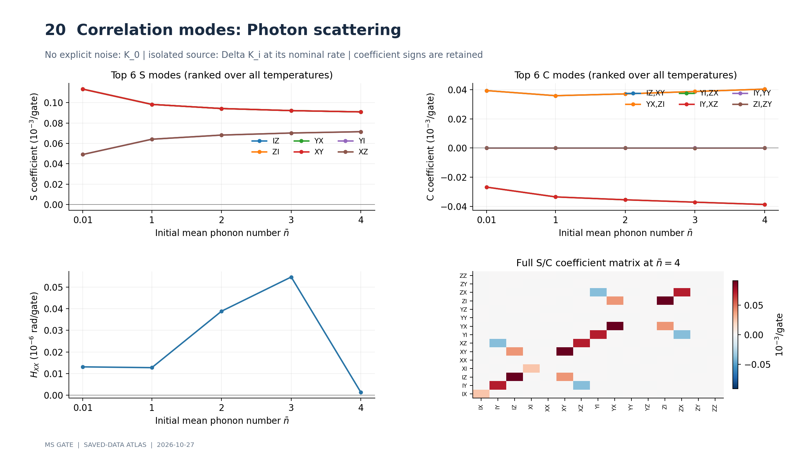
光散乱の主要成分。上段は温度全域の最大絶対値で選んだS/C各6モード、左下はH_XX、右下はnbar=4における15×15全S/C行列。右下の色範囲はこの入力内で設定しているため、他ページとの強度比較にはカラーバーを使う。ΔKの負係数は符号付き差分であり、単独の物理的崩壊率とは限らない。 スピン位相緩和・光散乱のH_XXは約1e-8 rad/gateの微小量で、この図だけで非ゼロの物理応答を確定しない。
出典
results/noise_error_structure/full_taxonomy_coefficients.csv
レート依存と検証
21 Does the correlation structure survive rate changes?
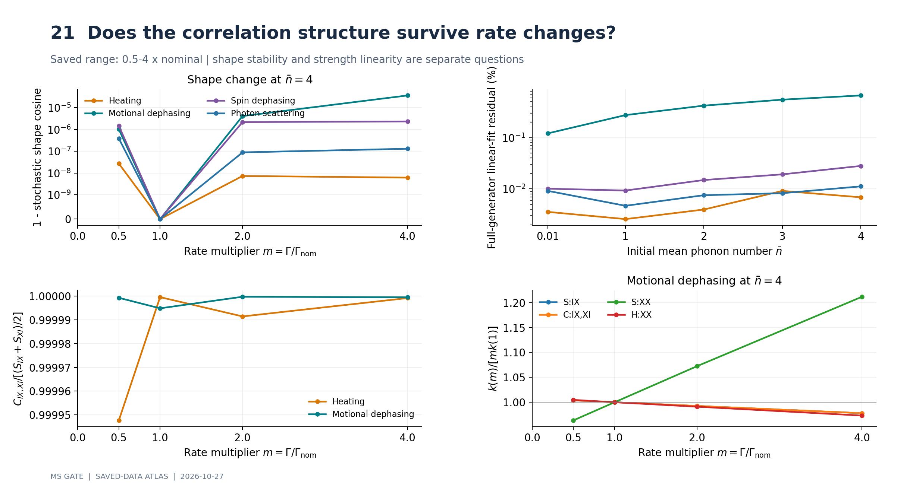
主要な確率的モードの向きはレートを変えてもほぼ保存される。運動ノイズではC_IX,XIと局所X係数の平均の比がほぼ1で、集団X構造を保つ。一方、運動位相緩和の高温・高レートではS_XXが線形外挿から増え、集団X係数はやや減る。左上はゼロを表示できるsymlog軸。
出典
results/rate_hsca_structure/rate_structure_metrics.csv
results/rate_hsca_structure/rate_matrix_linearity.csv
レート依存と検証
22 Pairwise response inside the diagonal-Pauli fit
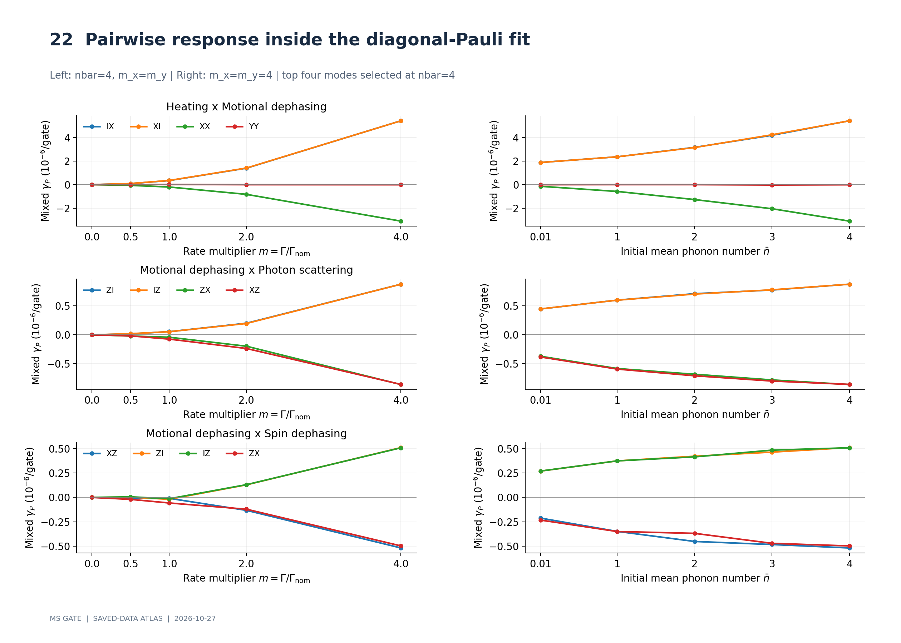
生成子を保存した上位3ペアについて、対角Pauli散逸フィット係数の混合差分を表示。これは完全H/S/C/A混合生成子の全成分ではなく、対角Pauli部分へのフィット内の結果。全6ペアの完全な生成子解析が完了したことを意味しない。
出典
results/error_generator_rate_nbar/top3_pairwise_generator/pairwise_generator_interactions.csv
results/error_generator_rate_nbar/top3_pairwise_generator/config.json
レート依存と検証
23 Small-rate mixed derivatives: numerical stability check
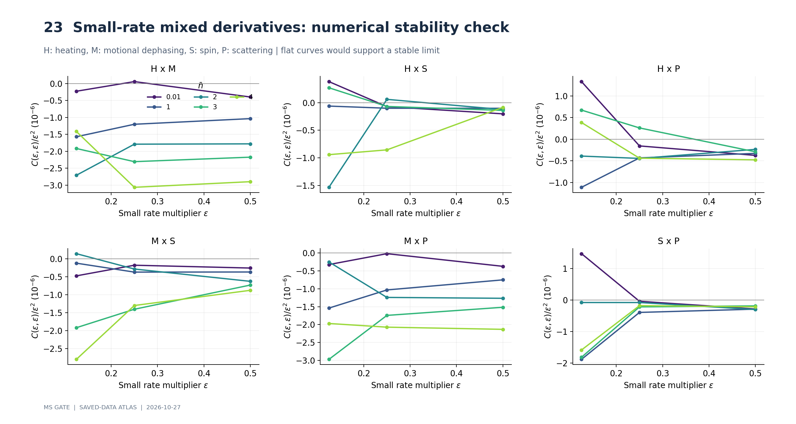
ゼロレート近傍の混合係数を差分幅ごとに比較。差分をepsilonの2乗で割るため、元の数値誤差が増幅される。曲線が水平に収束していない条件があり、外挿値の符号や桁数を確定した物理量として扱わない。
出典
results/noise_rate_nbar_sweep/pairwise_perturbative_kappa/perturbative_kappa_raw.csv
results/noise_rate_nbar_sweep/pairwise_perturbative_kappa/perturbative_kappa_extrapolated.csv
レート依存と検証
24 Model order and numerical checks
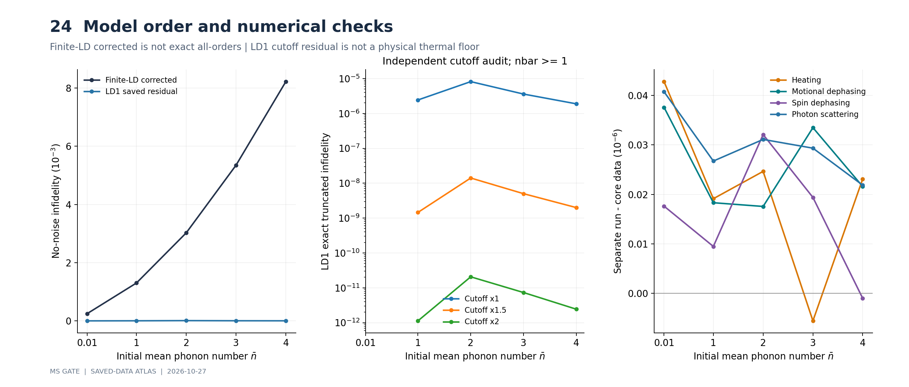
LD1の無散逸残差は基底次元を増やすと減少する。nbar=0.01の保存値1e-16は下限処理によるため、中央の対数比較には含めない。右は別保存系列の単独ノイズ計算との実測差で、元系列を混合して上書きしない。主たる有限LDの温度依存はこの差より大きいが、微小なペア差分の収束を保証する図ではない。
出典
results/noise_rate_nbar_sweep/noise_free_diagnostics/full_vs_lamb_dicke/full_vs_lamb_dicke_summary.csv
results/noise_rate_nbar_sweep_ld1/evaluation/cutoff_audit/exact_cutoff_comparison.csv
results/single_mode_ms_gate_infidelity/single_noise/ld2/summary.csv
results/noise_rate_nbar_sweep/four_noise_reconstruction/four_noise_single_components.csv
レート依存と検証
25 Motional-dephasing nonlinear response: model checks
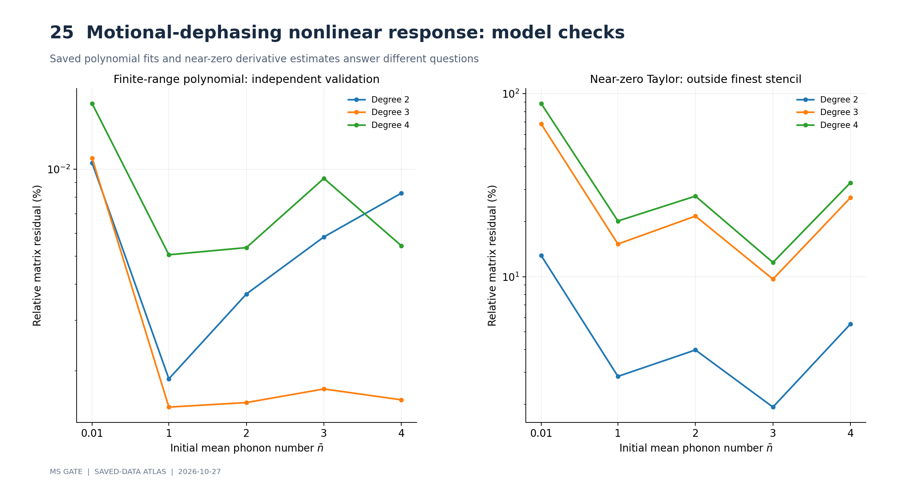
運動位相緩和の高次レートモデルの保存検証。左は有限範囲の多項式フィットの独立検証、右はゼロ近傍Taylor係数を推定した最小ステンシルの外側での検証。良好な有限範囲フィットだけで高階微分の収束を主張しない。
出典
results/motional_dephasing_polynomial/polynomial_matrix_validation_metrics.csv
results/motional_dephasing_polynomial/dyson_frechet_taylor/taylor_truncation_summary.csv
レート依存と検証
26 Single-source calculations: comparison of model order
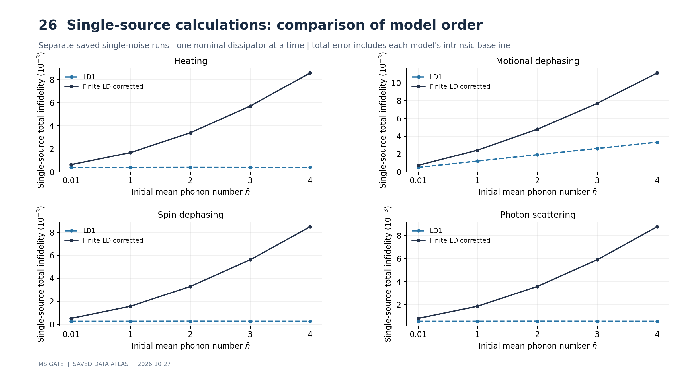
別保存系列にあるLD1と有限LD補正モデルの単独ノイズ計算、計40点。表示は単独ノイズを入れた総誤差I_iで、無散逸基準を引いた増分ではない。したがって有限LDモデルの全パネルに共通する温度増加を、その散逸だけの効果と解釈しない。単独増分の比較は図1・2を参照。
出典
results/single_mode_ms_gate_infidelity/single_noise/ld1/summary.csv
results/single_mode_ms_gate_infidelity/single_noise/ld2/summary.csv